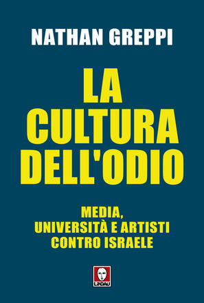

15:51 · 2 OPERE
Nathan Greppi, La cultura dell’odio. Media, università e artisti contro Israele.
Il filo del discorso
La recensione di La cultura dell’odio di Nathan Greppi ne presenta l’ampiezza documentaria e la scelta di ricostruire posizioni di media, università e artisti su Israele. Dr Divago apprezza l’apparato delle fonti e distingue il compito di documentare da quello di confutare ogni singola affermazione. La discussione passa per esempi tratti dal volume e per l’intervista a Claudio Vercelli, fino al confronto con Goldhagen. Una riserva sull’uso dell’espressione teorie del complotto accompagna il giudizio conclusivo: il libro viene proposto come mappa da cui tornare ai documenti originali.
I libri nel discorso

La cultura dell’odio. Media, università e artisti contro Israele
Copertina: Lindau · I Draghi · 2025
Copertina autentica di riferimento, controllata visivamente. L’edizione non è identificata come quella usata nel video.
Titolo e autore sono annunciati come oggetto principale della recensione.
Passaggio 0:01 ↗ · Fonti e libro ↗
The Devil That Never Dies
Copertina: Little, Brown · edizione inglese di riferimento
Immagine associata all’ISBN di riferimento e controllata visivamente; edizione e traduzione non identificate come quelle citate o lette nel video.
Goldhagen e The Devil That Never Dies sono nominati nel confronto conclusivo.
Passaggio 13:50 ↗ · Fonti e libro ↗